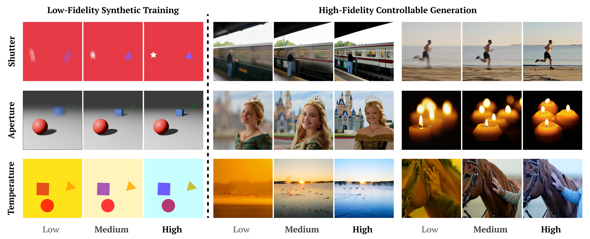
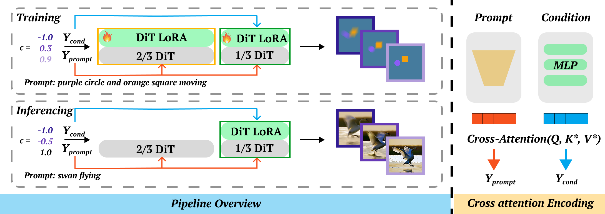
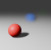
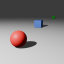
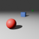

Fine-tuning large-scale text-to-video diffusion models to add new generative controls, such as those over physical camera parameters (e.g., shutter speed or aperture), typically requires vast, high-fidelity datasets that are difficult to acquire. In this work, we propose a data-efficient fine-tuning strategy that learns these controls from sparse, low-quality synthetic data. We show that not only does fine-tuning on such simple data enable the desired controls, it actually yields superior results to models fine-tuned on photorealistic “real” data. Beyond demonstrating these results, we provide a framework that justifies this phenomenon both intuitively and quantitatively.

Overview of our controllable generation pipeline. To achieve decoupled control, we encode the scalar condition separately from the text guidance via a parallel cross-attention module. During training, we optimize the conditional adapter while actively updating the backbone by injecting LoRA layers into all DiT blocks. During inference, we discard the LoRA weights from the shallow two-thirds of the transformer blocks, retaining only the conditional adapter and backbone LoRA in the deepest third of the blocks. This selective retention enables high-fidelity physical control while minimizing semantic corruption of the backbone.
Each property is trained on only 150 synthetic samples — low-fidelity videos or images spanning the full control range [−1, 1]. The examples below are a few representative samples illustrating what this training data looks like. Despite the minimal and low-quality nature of this data, the model learns robust, generalizable control.



“A cheetah in full sprint, a powerful, elongated blur as it hunts.”
“A fire dancer spinning twin flaming torches, bright circular trails illuminating the night.”
“A glass of red wine on a table with a view over vineyard rolling hills, the camera focus on the foreground.”
“A panda eating bamboo in the foreground, leafy forest depth behind.”
“A cyclist racing through a tunnel with alternating shadow and light bands.”
“A fountain spraying water in a large plaza in front of a museum.”
@inproceedings{cheng2026lessismore,
title = {Less is More: Data-Efficient Adaptation for Controllable Text-to-Video Generation},
author = {Cheng, Shihan and Kulkarni, Nilesh and Hyde, David and Smirnov, Dmitriy},
booktitle = {Proceedings of the IEEE/CVF Conference on Computer Vision and Pattern Recognition (CVPR)},
year = {2026}
}
This work builds on diffusion-pipe by tdrussell and the Wan2.1 backbone by the Wan team.